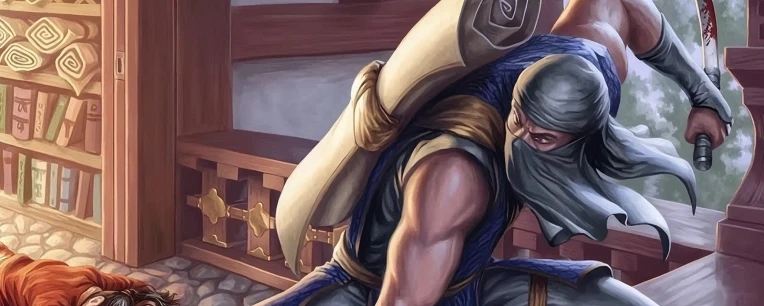

Pauper
Cos'è il Pauper?
Questo formato affascinante si basa su una regola fondamentale: per poter essere inserita nel tuo mazzo, una carta deve essere stata stampata almeno una volta con il livello di rarità "comune". Se una carta rispetta questo requisito, tutte le sue versioni successive diventano automaticamente legali.
 60
60
 2
2
 20 min
20 min
Costruzione del Mazzo
Seguendo le linee guida classiche dei formati Constructed, il tuo mazzo principale dovrà essere composto da un minimo di 60 carte. Avrai anche a disposizione una sideboard (panchina) di 15 carte, fondamentale per adattare la tua strategia durante i match al meglio delle tre partite. Fatta eccezione per le terre base, il limite massimo per ogni singola carta è di quattro copie. Ricorda sempre di consultare la lista ufficiale delle carte bandite per assicurarti che il tuo mazzo sia legale!

Perché Scegliere il Pauper?
Il Pauper ha conquistato una grossa fetta della community grazie a tre pilastri fondamentali:
- Accessibilità: Essendo basato esclusivamente su carte comuni, risulta essere il formato competitivo più economico in assoluto. Permette di costruire mazzi di altissimo livello senza dover affrontare le spese tipiche di formati come Modern o Standard.
- Complessità Strategica: Il termine "comune" non deve trarre in inganno. Il livello di interazione, le combinazioni e la profondità delle partite sono equiparabili a quelle dei formati più blasonati.
- Nessuna Rotazione: Trattandosi di un formato Eternal, le tue carte non "scadranno" mai. Una volta costruito il tuo mazzo preferito, potrai usarlo per anni (salvo eventuali ban mirati).

Archetipi Storici
Nonostante il limite di rarità, il metagame è vasto e permette di esprimere ogni tipo di macro-strategia: Aggro, Control o Combo. Ecco alcuni dei mazzi più iconici:
Burn (Rosso): L'obiettivo è semplice e diretto. Azzerare i 20 punti vita dell'avversario il più velocemente possibile lanciando raffiche di magie di danno diretto.

Affinity (Artefatti): Una corazzata sinergica in grado di schierare rapidamente enormi creature artefatto a costo ridotto, travolgendo le difese nemiche nei primissimi turni.

Fate / Ninja (Blu/Nero): Un mazzo elegante basato sul controllo del campo e sul vantaggio carte. Sfrutta abilità uniche per far rimbalzare le proprie creature e sorprendere l'avversario.

Pronto a scendere in campo?
Questo formato dimostra perfettamente che non servono carte rare e costose per vivere partite epiche e ricche di strategia. Che tu sia un veterano in cerca di una nuova sfida o un nuovo giocatore pronto a lanciarsi nel mondo competitivo, raduna le tue carte comuni, studia le sinergie migliori e unisciti a una delle community più accoglienti del Multiverso!